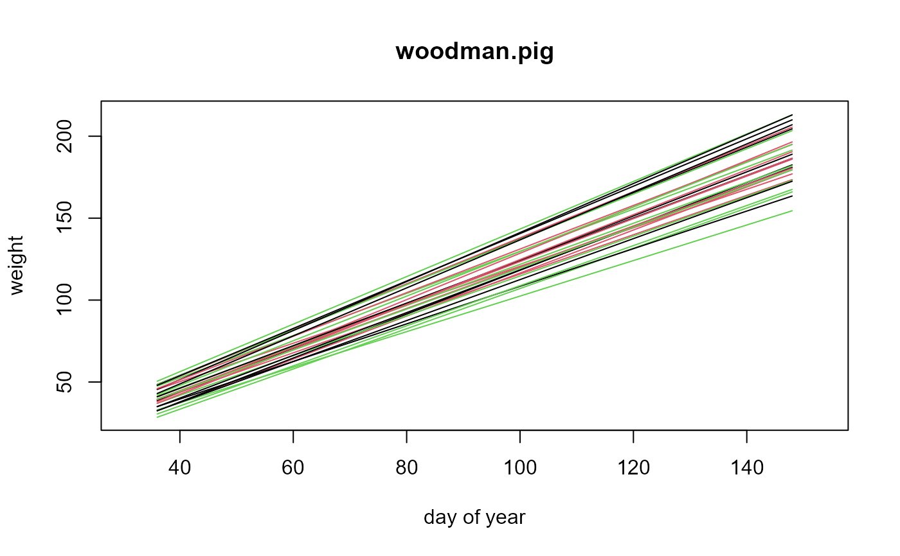

woodman.pig.RdWeight gain in pigs for different treatments, with initial weight and feed eaten as covariates.
data("woodman.pig")A data frame with 30 observations on the following 7 variables.
penpen
treatmentdiet
pigpig number
sexsex
weight1initial weight in pounds, week 0
weight2final weight in pounds, week 16
feedfeed eaten in pounds
w0initial weight
gaverage weekly gain
hhalf rate of change in growth
Six pigs in each of 5 pens were fed individually. From each litter there were 3 males and 3 females chosen for a pen. Three different diet treatments were used.
Note: Woodman gives the initial weights to the nearest 0.5 pounds.
The w0, g, h columns are from Wishart 1938. Wishart used the weekly weight measurements (not available) to fit quadratic growth curves for each pig and then reported the constants. These are the data that are widely used by many authors.
Woodman, Evans, Callow & Wishart (1936). The nutrition of the bacon pig. I. The influence of high levels of protein intake on growth, conformation and quality in the bacon pig. The Journal of Agricultural Science, 26, 546 - 619. Table V, Page 557. https://doi.org/10.1017/S002185960002308X
Wishart, J. (1938). Growth-rate determinations in nutrition studies with the bacon pig and their analysis. Biometrika, 30: 16-28. Page 20, table 2. https://doi.org/10.2307/2332221
Wishart (1950) Table 2, p 17.
Bernard Ostle (1963). Statistics in Research, 2nd ed. Page 455. https://archive.org/details/secondeditionsta001000mbp
Henry Scheffe (1999). The Analysis of Variance. Page 217.
Peter H Westfall, Randall Tobias, Russell D Wolfinger (2011). Multiple Comparisons and Multiple Tests using SAS. Sec 8.3.
# \dontrun{
library(agridat)
data(woodman.pig)
dat <- woodman.pig
# add day of year for each weighing
dat <- transform(dat, date1=36, date2=148)
plot(NA, xlim=c(31,153), ylim=c(28,214),
xlab="day of year", ylab="weight")
segments(dat$date1, dat$weight1, dat$date2, dat$weight2,
col=as.numeric(as.factor(dat$treatment)))
title("woodman.pig")

# Average gain per week
dat <- transform(dat, pen=factor(pen), treatment=factor(treatment),
sex=factor(sex))
m1 <- lm(g ~ -1 + pen + treatment +sex + treatment:sex + w0, data=dat)
anova(m1)
#> Analysis of Variance Table
#>
#> Response: g
#> Df Sum Sq Mean Sq F value Pr(>F)
#> pen 5 2603.57 520.71 1938.4699 < 2.2e-16 ***
#> treatment 2 2.32 1.16 4.3262 0.028294 *
#> sex 1 0.27 0.27 1.0079 0.328016
#> w0 1 3.62 3.62 13.4800 0.001622 **
#> treatment:sex 2 0.33 0.16 0.6074 0.555012
#> Residuals 19 5.10 0.27
#> ---
#> Signif. codes: 0 '***' 0.001 '**' 0.01 '*' 0.05 '.' 0.1 ' ' 1
# Compare diets. Results similar to Westfall 8.13
libs(emmeans)
pairs(emmeans(m1, "treatment"))
#> NOTE: Results may be misleading due to involvement in interactions
#> contrast estimate SE df t.ratio p.value
#> A - B 0.446 0.233 19 1.916 0.1614
#> A - C 0.681 0.232 19 2.938 0.0220
#> B - C 0.235 0.233 19 1.009 0.5806
#>
#> Results are averaged over the levels of: pen, sex
#> P value adjustment: tukey method for comparing a family of 3 estimates
# NOTE: Results may be misleading due to involvement in interactions
# contrast estimate SE df t.ratio p.value
# A - B 0.4283 0.288 19 1.490 0.3179
# A - C 0.5200 0.284 19 1.834 0.1857
# B - C 0.0918 0.288 19 0.319 0.9456
# }